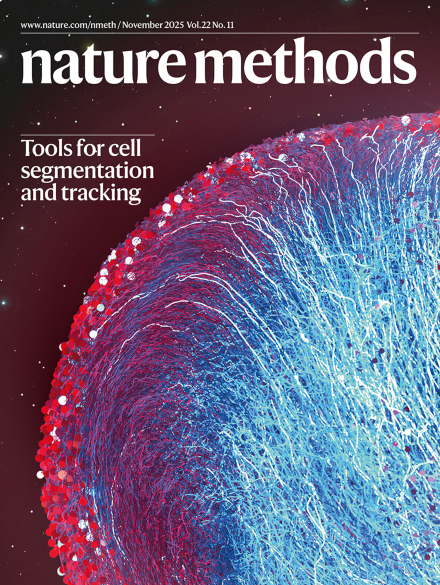

I’m senior research scientist at Biohub working at the intersection of AI and biology.
Multi-terabyte 3D video of developing zebrafish embryo cells tracked with ultrack;
Publications

Ultrack featured on the cover of Nature Methods
- J. Bragantini, I. Theodoro, X. Zhao, T. A. Huijben, E. Hirata-Miyasaki, S. VijayKumar, A. Balasubramanian, and others. "Ultrack: pushing the limits of cell tracking across biological scales," Nature Methods, 2025. | link | github
- T. A. Huijben, A. G. Anderson III, A. Sweet, E. Hoops, C. Larsen, K. Awayan, J. Bragantini, and others, "intracktive: a web-based tool for interactive cell tracking visualization," Nature Methods, 2025. | link
- M. Lange, A. Granados, S. VijayKumar, J. Bragantini, S. Ancheta, Y.-J. Kim, S. Santhosh, and others, "A multimodal zebrafish developmental atlas reveals the state-transition dynamics of late-vertebrate pluripotent axial progenitors," Cell, 2024. | website | link
- J. Bragantini, M. Lange, and L. A. Royer, "Large-Scale Multi-Hypotheses Cell Tracking Using Ultrametric Contours Maps," European Conference on Computer Vision (ECCV), 2024. | link | pdf
- E. Eck, B. Moretti, B. H. Schlomann, J. Bragantini, M. Lange, X. Zhao, and others, "Single-cell transcriptional dynamics in a living vertebrate," bioRxiv, 2024.
- J. Moore, D. Basurto-Lozada, S. Besson, J. Bogovic, J. Bragantini, E. M. Brown, J.-M. Burel, and others, “OME-Zarr: a cloud-optimized bioimaging file format with international community support,” Histochemistry and Cell Biology, 2023. | pdf
- I. F. Silva, A. M. Sousa, A. X. Falcão, and J. Bragantini, "Differential Dynamic Trees for Interactive Image Segmentation," International Conference on Pattern Recognition (ICPR), pp. 4328-4334, 2022.
- B. Yang, M. Lange, A. Millett-Sikking, X. Zhao, J. Bragantini, S. VijayKumar, M. Kamb, R. Gómez-Sjöberg, A. C. Solak, W. Wang, and others, “DaXi—high-resolution, large imaging volume and multi-view single-objective light-sheet microscopy,” Nature methods, vol. 19, no. 4, pp. 461–469, 2022. | link | pdf
- J. Bragantini, A. Falcão, and L. Najman, “Rethinking Interactive Image Segmentation: Feature Space Annotation,” Pattern Recognition, vol. 131, p. 108882, 2022. | link | pdf | github
- J. Bragantini, “Interactive Image Segmentation: From Graph-based Algorithms to Feature-Space Annotation,” Master's thesis, Universidade Estadual de Campinas, Instituto de Computação, 2021. | pdf
- J. Bragantini, B. Moura, A. X. Falcão, and F. A. M. Cappabianco, “Grabber: A tool to improve convergence in interactive image segmentation,” Pattern Recognition Letters, vol. 140, pp. 267–273, 2020. | link | pdf | github
- S. B. Martins, J. Bragantini, A. X. Falcão, and C. L. Yasuda, “An adaptive probabilistic atlas for anomalous brain segmentation in MR images,” Medical Physics, vol. 46, no. 11, pp. 4940–4950, 2019. | link
- A. X. Falcão and J. Bragantini, “The Role of Optimum Connectivity in Image Segmentation: Can the Algorithm Learn Object Information During the Process?,” Int. Conf. on Discrete Geometry for Computer Imagery, pp. 180–194, 2019. | link
- J. Bragantini, S. B. Martins, C. Castelo-Fernandez, and A. X. Falcão, “Graph-based image segmentation using dynamic trees,” Iberoamerican Congress on Pattern Recognition, pp. 470–478, 2018. | link | github